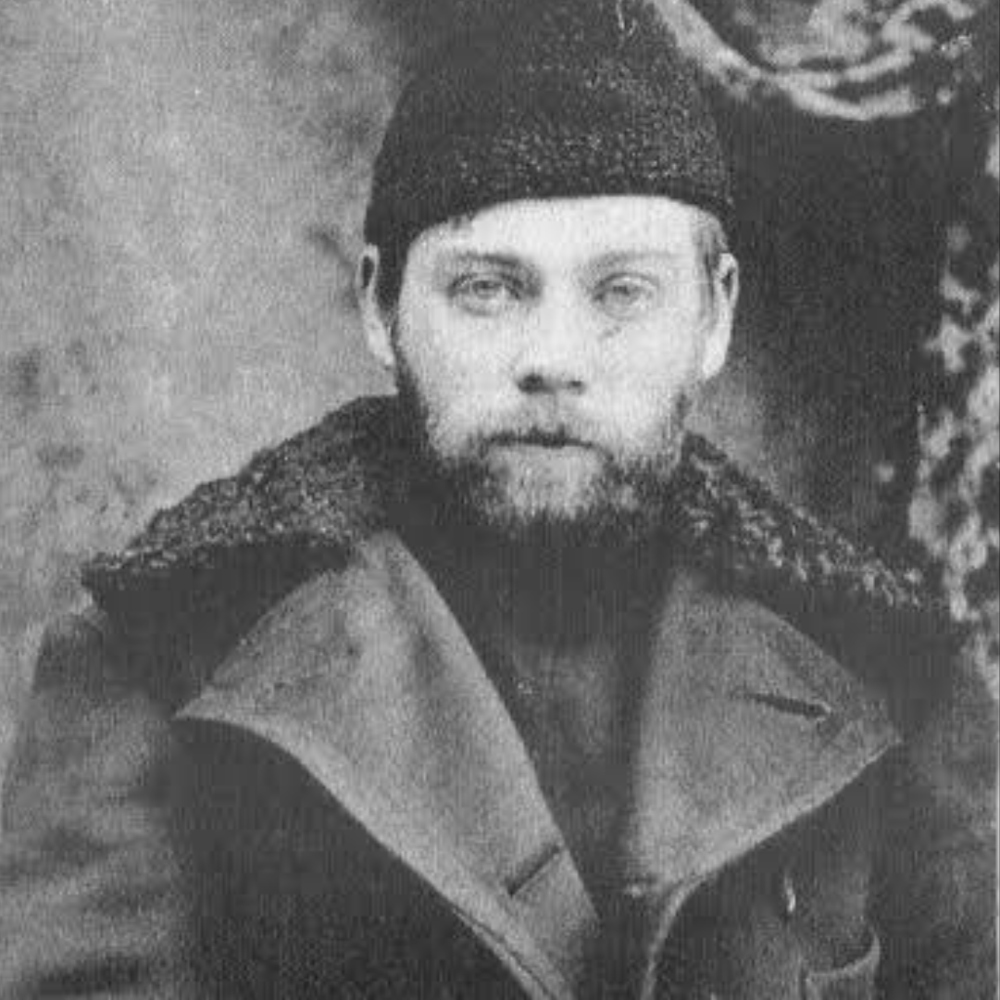

Alexander Bogdanov was a Russian physician and philosopher. He was one of the most powerful political figures in Russia at the time but was pushed out by rivals and with nothing left to show for it, he moved his attention to science and medicine. Bogdanov had one core theory; that blood transfusions from the young, could preserve the life of the old.
Why blood specifically? Blood has a history of significance as far back as the 1600s where blood was transfused from animals to humans as it was seen as something which could cure madness and moral failure. Bogdanov's unique take on blood was that both the old and the young would benefit from a transfusion.
With Soviet government financial backing, he set forward to prove his theory true in 1926. His proof for these transfusions working? Self reports. He and his colleagues claimed that these transfusions reversed hair loss, improved eyesight and left Bogdanov with a lot more energy, each transfusion supposedly reversing his age.
He continued with many transfusions until in 1928, after his twelfth transfusion, he exchanged blood with a young student who had malaria and tuberculosis and possibly a different blood type which alone can be deadly. Bogdanov developed a severe reaction and died at age 54.
It's reported by some that Bogdanov even knew about the student's conditions but chose to proceed anyway.
So how much truth do old and young blood transfusions carry? Maybe you've heard theory on billionaires receiving child blood, the truth is a little complicated. A study in 2005 showed that young and old mice with surgically joined circulatory systems made the older mice live longer through improved muscle repair and brain activity. A wave of startups began around 2016 including Ambrosia where people could pay $8,000 for plasma transfusions from young donors, by 2019, the FDA put out a public warning; that there was no proven benefit.
In humans, it's unlikely that younger blood or plasma does anything for older donors or vice versa, the only large-scale company to try it was shut down by the FDA. The institute Bogdanov founded still exists to this day as one of Russia's major blood research centres. It just doesn't do what he built it for.